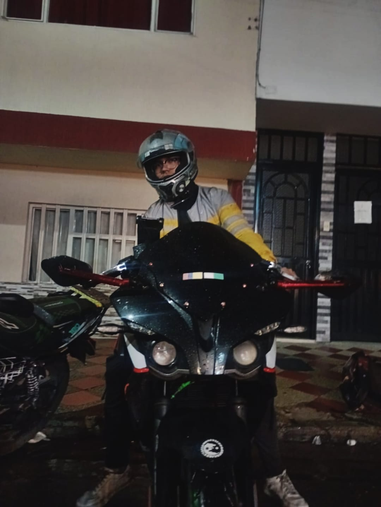
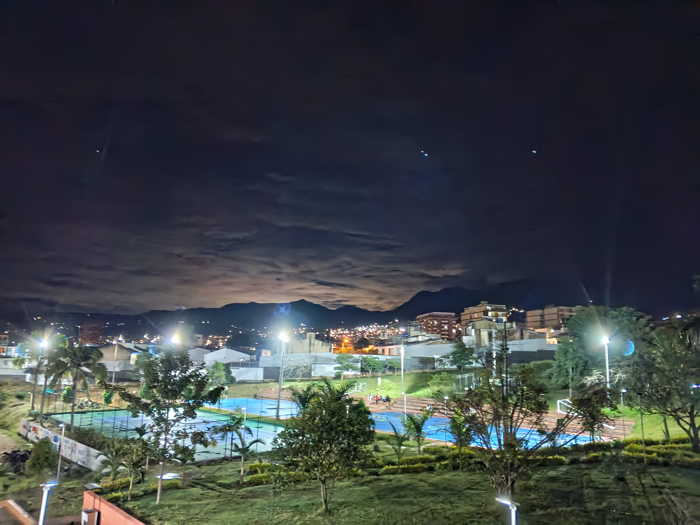

Todos los sueños nacen en lugares que uno nunca imagina, en rincones ocultos de nuestro corazón donde el deseo de aventura y exploración comienza a crecer. Cada meta tiene su razón de ser, su objetivo que se quiere alcanzar, y cada misión espera ser cumplida por alguien decidido, un verdadero gladiador dispuesto a superar cualquier desafío. Así como el corcel espera pacientemente a su caballero, mi Pulsar RS 200 aguarda por mí, lista para llevarme a través de los pueblitos más hermosos y, quizás, peligrosos de Colombia.
Mi meta es llegar al mar, pero no de cualquier manera. Quiero que esta travesía sea más que solo un viaje. Cada kilómetro recorrido, cada curva tomada, cada paisaje que se despliega ante mis ojos, es una oportunidad para conocer más de nuestro país, para admirar su belleza en todo su esplendor. Parto desde la ciudad de Fusagasuga, desde los tranquilos pueblos enclavados en las montañas, hasta los vibrantes rincones de la costa, todo forma parte de esta travesía. Y mientras recorro Colombia, tomando un tintico en cada parada, me doy cuenta de que lo más hermoso de este viaje no es solo el destino, sino cada momento vivido en el camino.
